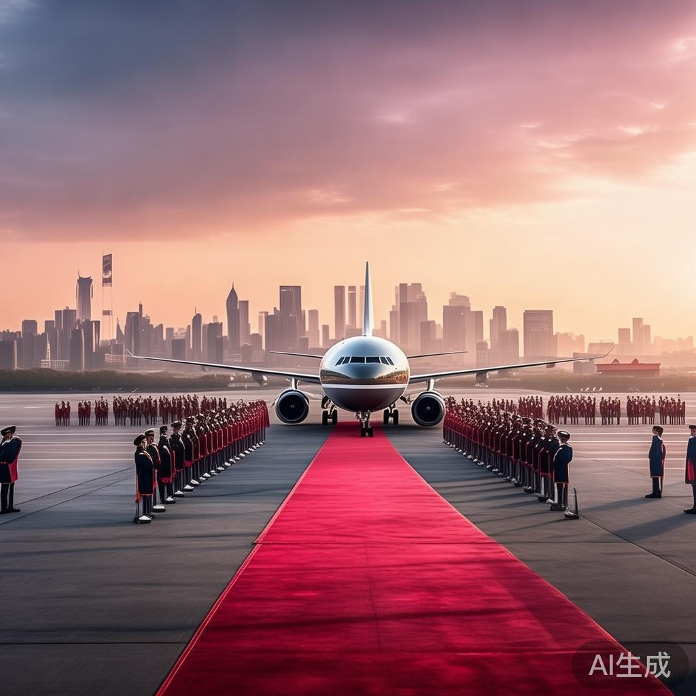
01
普京抵达深圳出席APEC 蔡奇前往机场迎接
俄罗斯总统普京11月18日凌晨乘专机抵达深圳，出席亚太经合组织第三十三次领导人非正式会议。中共中央政治局常委、中央书记处书记蔡奇前往机场迎接。会议将于11月18日至19日在深圳举行。
国内

俄罗斯总统普京11月18日凌晨乘专机抵达深圳，出席亚太经合组织第三十三次领导人非正式会议。中共中央政治局常委、中央书记处书记蔡奇前往机场迎接。会议将于11月18日至19日在深圳举行。
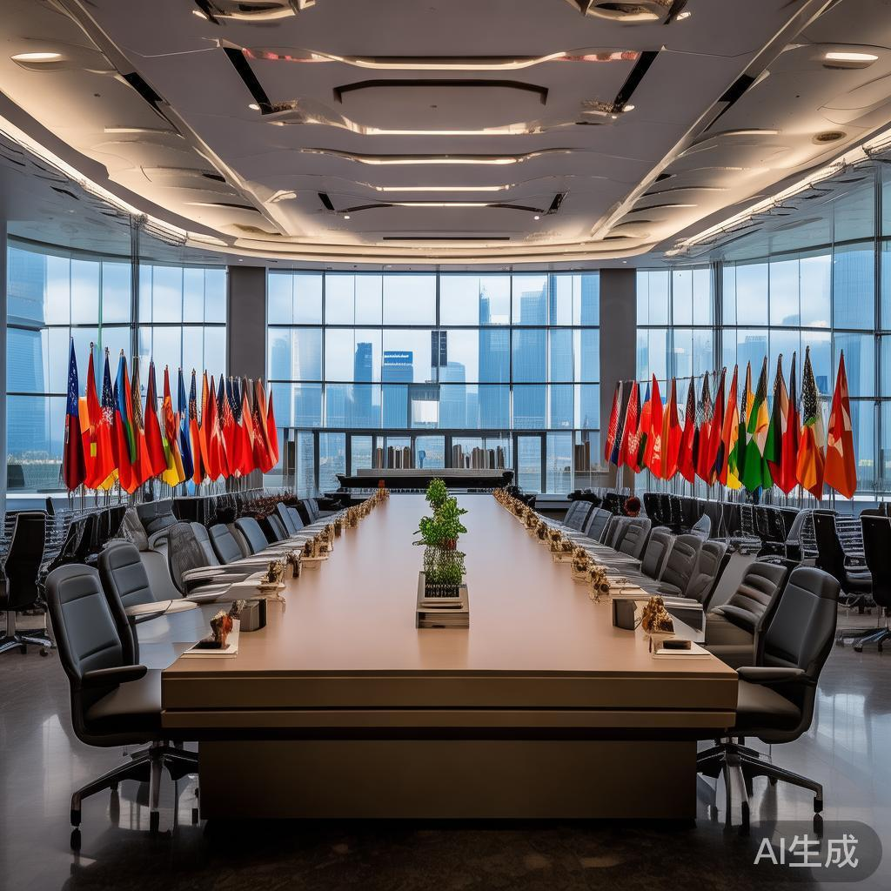
2026年亚太经合组织（APEC）“中国年”进入压轴时刻，第三十三次领导人非正式会议11月18日至19日在深圳举行。从1991年加入APEC至今，中国在地区经济合作中的角色不断进阶，主场外交再迎高光时刻。
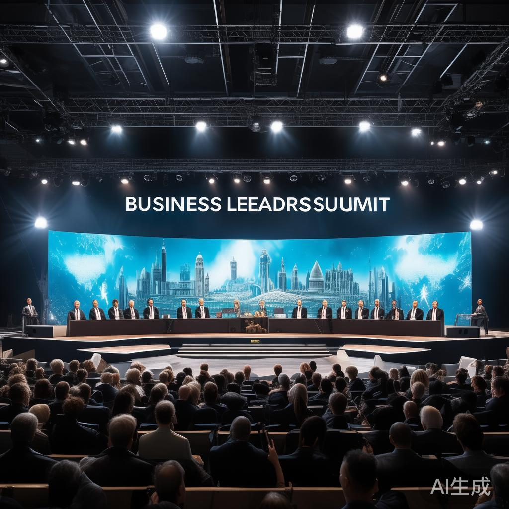
11月17日，2026年亚太经合组织（APEC）工商领导人峰会在深圳开幕。宁德时代、百度等企业负责人在会上发言，围绕人工智能、新能源等技术变革展开讨论，“技术迭代，波涛汹涌”成为会场高频词。
也门胡塞武装17日称，经过数周在战略要地曼德海峡附近的激烈战斗，该组织已控制也门西南部塔伊兹省和拉赫季省的10个地区，总面积约7100平方公里，并声称击败也门政府军12个师。军事发言人萨雷亚当天通过该组织控制的媒体发表声明。
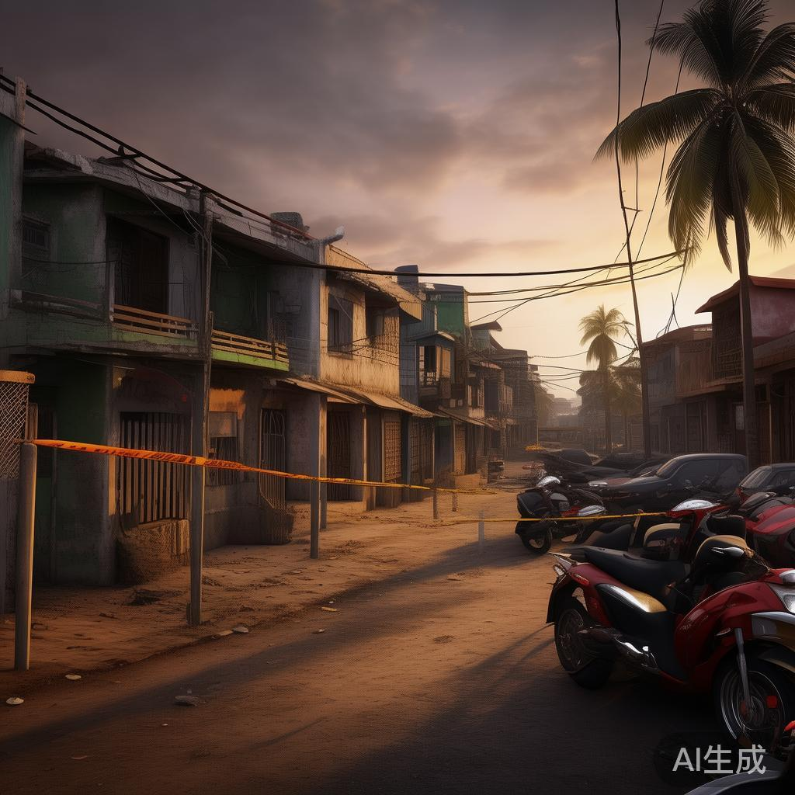
尼日利亚警方17日说，该国东北部包奇州发生一起袭击事件，一名中国公民遭武装人员袭击身亡。中国驻尼日利亚使馆已提醒在尼中国公民加强安全防范——年末将至，针对中国公民的袭击、绑架等恶性案件时有发生。
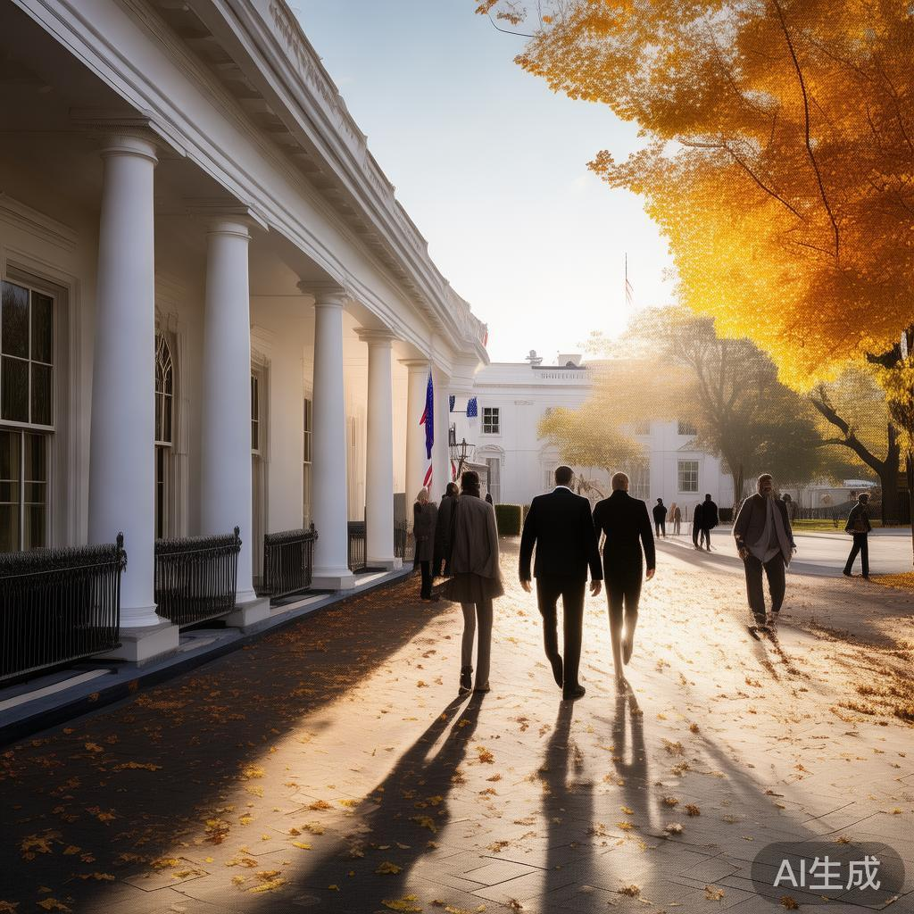
美国新任白宫办公厅主任斯蒂芬·米勒与国务卿鲁比奥，这一对意料之外的盟友正成为白宫最具影响力的组合，极有可能左右特朗普政府剩余任期的政治议程。两人在移民、外交等议题上的分工与配合备受关注。
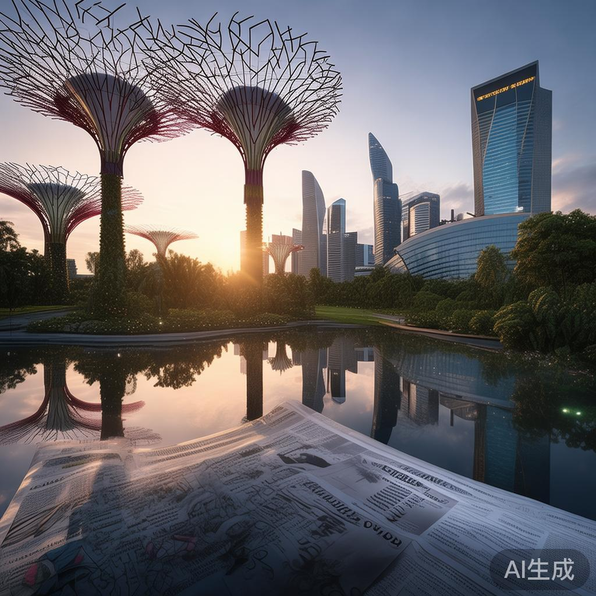
新加坡总理黄循财在人民日报发表署名文章表示，当今世界局势充满不确定性、分化趋势日益加剧，越是在这样的时刻各国越需要坚持开放、加强联系、深化合作。他本周将访问中国，行程涵盖深圳。
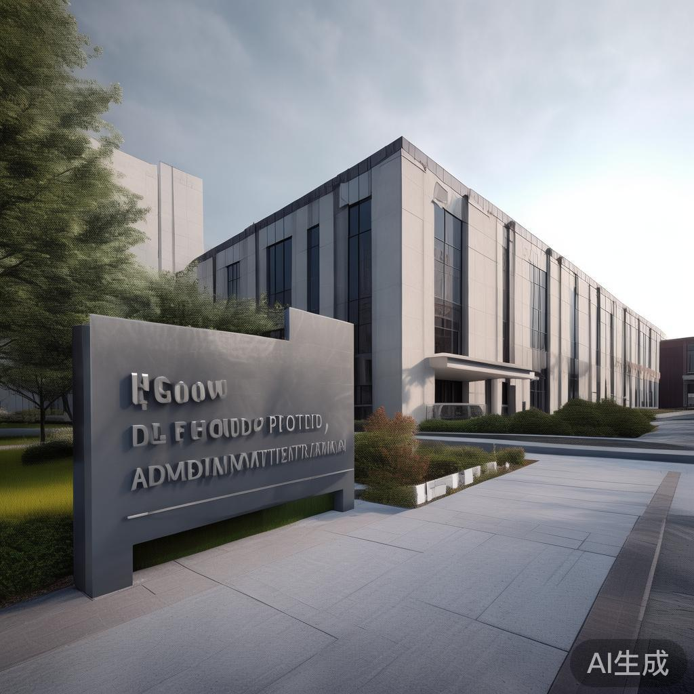
美国白宫宣布撤回对海迪·奥弗顿出任美国食品药品监督管理局（FDA）局长的提名。该机构局长的最终人选再度悬而未决，美国医疗监管政策走向继续受到市场关注。
11月18日亚太股市开盘走高。韩国综合股价指数开盘上涨2.6%至5098.82点，三星电子涨3%，SK海力士涨5%；日经225指数早盘涨0.25%报59007.40点，日经225指数期货早盘上涨1.9%。芯片股在前一日大跌后明显反弹。
日本财务省公布的贸易数据显示，日本10月出口同比增长20.5%，高于市场预估的20.4%；其中对美国出口增长23.9%，对亚洲出口增长22%，对欧盟出口增长22.1%；当月进口同比增长21.6%，低于预估的25.9%。
据经济参考报，Wind数据显示，截至11月17日，四季度以来已有近200款银行理财产品被宣布提前终止；仅11月以来理财子公司发布的提前终止公告就达89则，涉及招银理财、浦银理财等多家机构，退场品类以固定收益类为主。这一轮“退场潮”折射出理财行业从“规模扩张”向“质量优先”转轨。
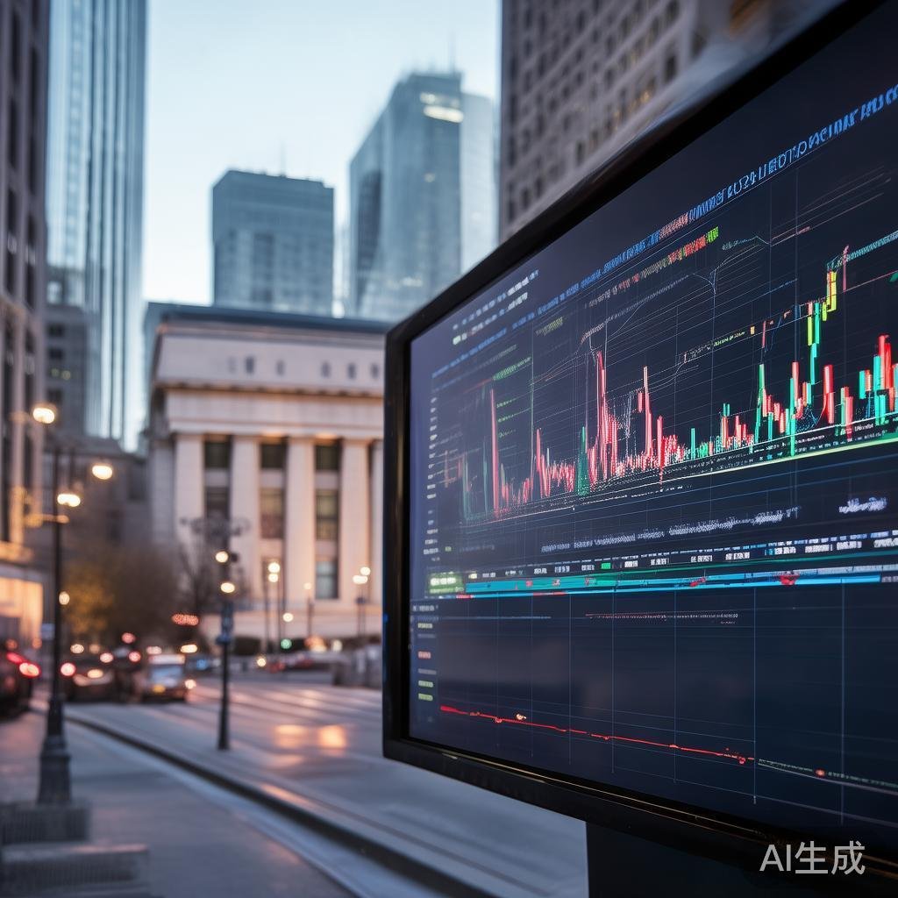
美国银行利率策略主管卡巴纳在周二发布的报告中表示，若没有迹象表明短期利率正在抑制美国经济，短期利率可能继续上升，2年期美债收益率到今年年底或将达到5%。美银建议客户减少对美国短期利率的风险敞口，并做好短期利率涨幅超过长期利率的准备。
高盛预测，2027年新兴市场固定收益资产将实现约10%的总回报，其中包括温和的货币升值。高盛策略师倾向于增持收益率较高的新兴市场资产，如南非、印度、匈牙利和哥伦比亚资产，认为其收益率得到了国内财政状况改善和经济改革的支撑。
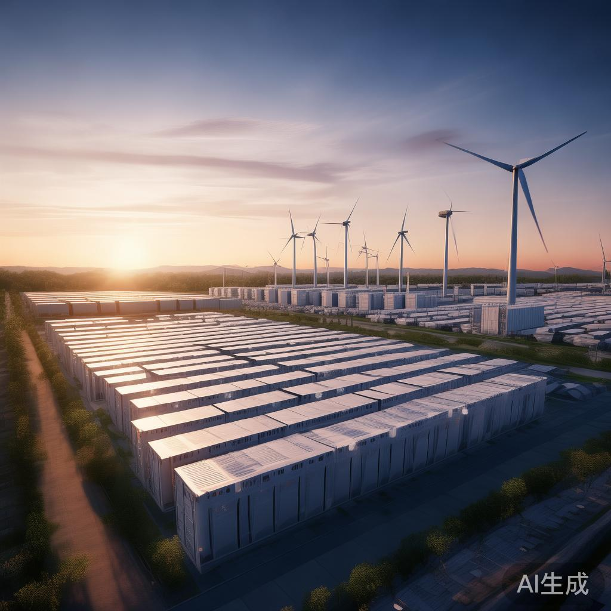
华泰证券研报称，11月13日国家发展改革委、国家能源局联合印发《“十五五”新型储能实施方案》，市场化机制加速储能盈利模式清晰，看好国内储能中长期需求。
人工智能公司Anthropic的投资方红杉资本与光速创投（Lightspeed）准备在该公司首次公开募股（IPO）中追加投资。此前Anthropic已完成多轮大规模融资，上市动向持续受到市场关注。
周二盘后交易中，新型云计算公司Nebius和CoreWeave股价分别上涨逾7%和逾9%，投资者从英伟达财报电话会议中看到了利好内容。针对市场对英伟达支持初创公司融资策略或生变的担忧，英伟达方面表示现有客户关系将保持不变，超大规模云服务商正急切寻求更多算力资源。
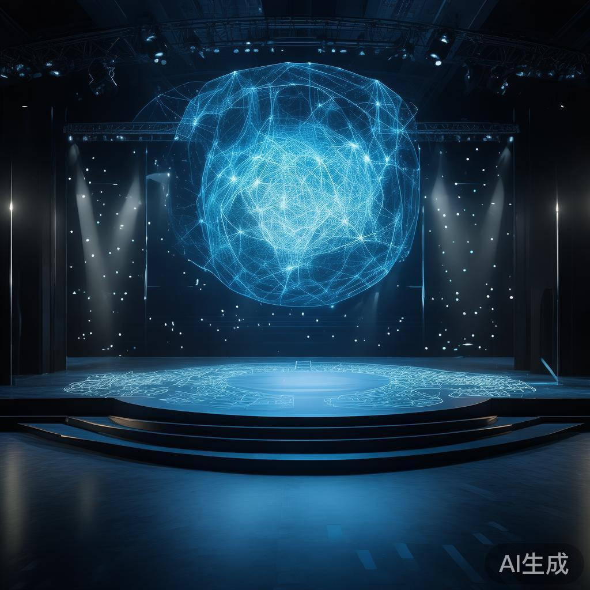
OpenAI发布GPT-6.2 Astra和GPT-6.2 Sol两款新模型，分别面向专业工作与日常任务场景，强化编程、专业工具与长任务处理能力。新模型将逐步向用户推送，与多家厂商的最新旗舰模型展开竞争。
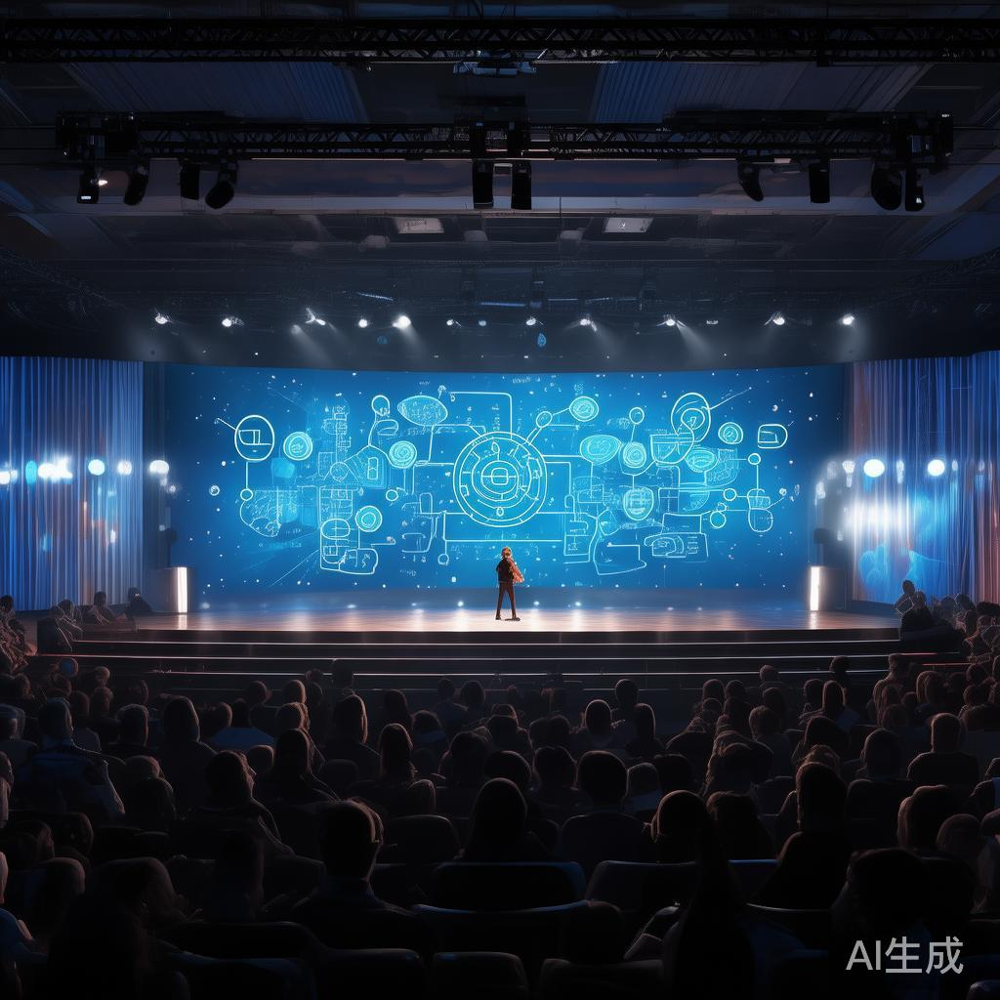
当地时间11月17日，微软董事长兼CEO纳德拉在Ignite大会上宣布启动“AI透明度倡议”，与埃森哲、Adobe、毕马威、万事达卡和沃尔沃汽车等逾40家机构合作，推动建立跨模型和供应商的AI透明度、安全及治理通用标准，重点围绕“可观察、可验证、可控制”建立机制。
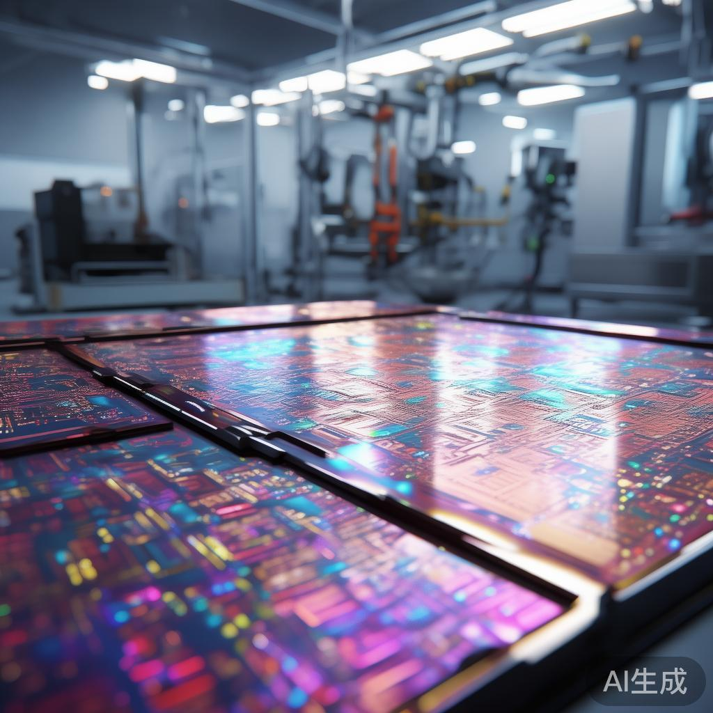
中信建投研报称，2026年前三季度电子板块营收、归母净利润分别同比增长41%、186%，三季度单季增幅分别为46%、165%；其中元件、半导体单季度净利增速分别达151%、516%。随着下游扩产兑现与算力新品迭代，半导体设备、材料、零部件板块业绩有望加速。
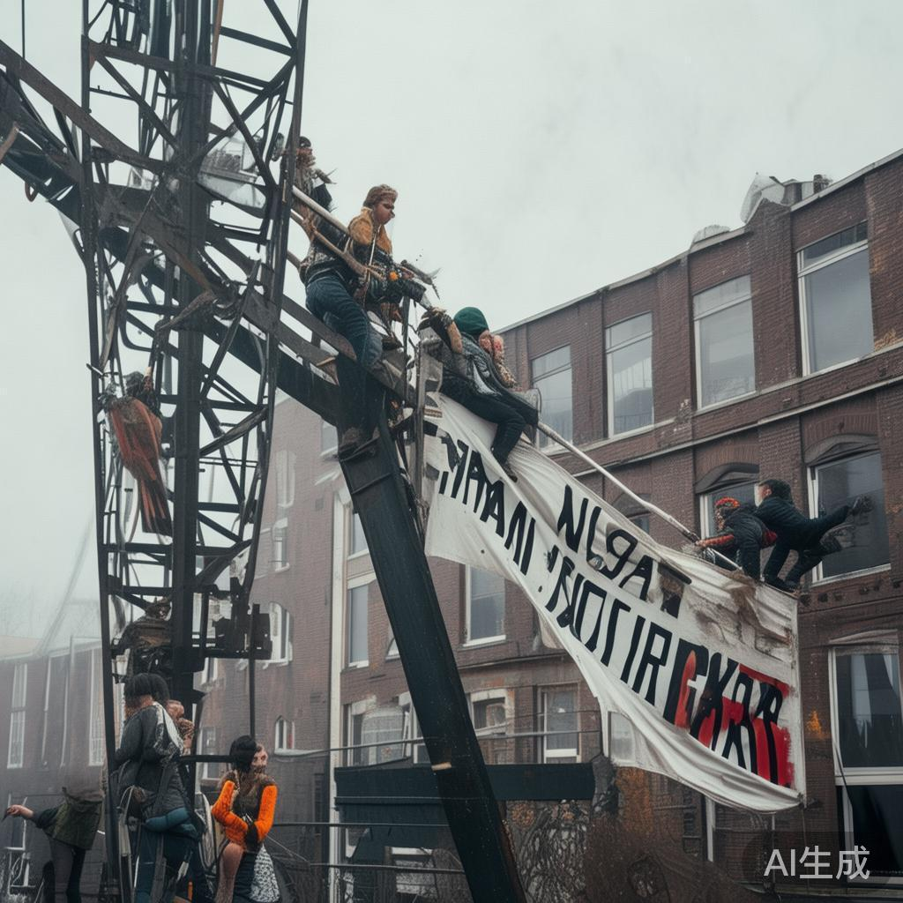
11月6日清晨，阿姆斯特丹西港区200多名示威者冲破微软数据中心工地围栏，有人爬上起重机、点燃信号弹。这场抗议折射出一股席卷欧洲的反数据中心浪潮，能耗、噪音与土地利用争议让社区与科技巨头的矛盾不断加深。
💬 评论区